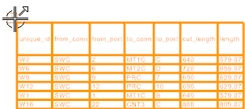
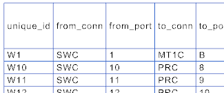

Highlight the cut sheet.

Right–click and choose Sort.
In the Sort Order box, select the unique_id check box.
点击确定。

The columns are reordered in numerical order per the unique_id values.
|
Caution |
You should only sort the cut sheet after all of the required attribute columns are added to it. |